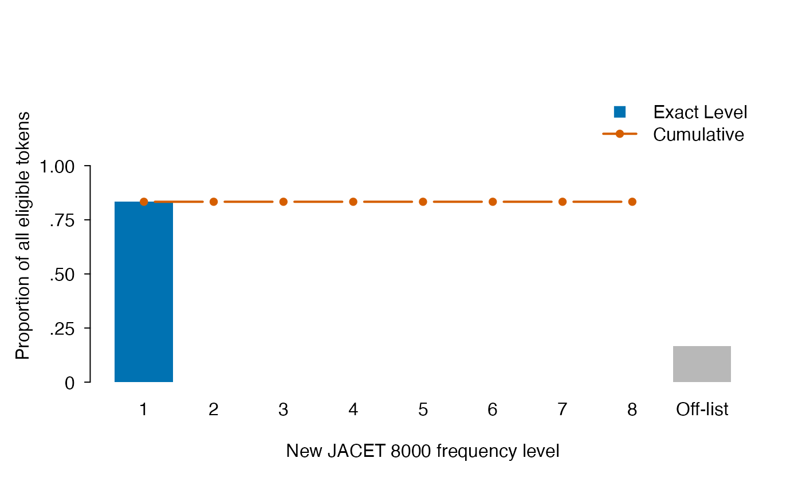
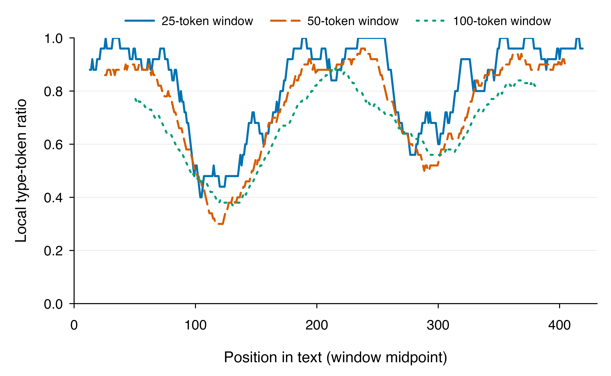

Question and unit of analysis
If your texts are in TXT files or a CSV, begin with the executable file-input walkthrough. It shows explicit document IDs, metadata joins, empty texts and saving before returning to the reporting steps here.
Suppose we want to describe how two texts about reading differ in local surface-word variety and coverage by New JACET 8000. These are separate questions: repeating familiar words can change diversity without changing list membership. The observations here are two project-authored sentences; they do not represent learner groups or establish proficiency differences.
We use the same English tokenizer, NFC normalization, lowercase conversion, word selection, and 10-token MATTR window for both texts. The small window makes the example executable; it is not a recommended universal window. In a study, justify the common window from the task and document-length distribution before comparing results. Keep writer and task IDs with document IDs in the study’s own table.
texts <- c(
first = "The student reads a book and discusses the book with a friend.",
second = "The student explores a story and shares several ideas with a friend."
)
prepared <- lexdiv_tokenize_batch(
texts, tokenizer = "english", normalization = "NFC", case = "lower"
)
diversity <- lexdiv_metrics_text_batch(
prepared, metrics = c("ttr", "mattr"), window_length = 10
)
metrics <- diversity$results
knitr::kable(metrics[, c("document_id", "metric_id", "N", "V", "value", "status")])| document_id | metric_id | N | V | value | status |
|---|---|---|---|---|---|
| first | ttr | 12 | 9 | 0.7500000 | ok |
| first | mattr | 12 | 9 | 0.8000000 | ok |
| second | ttr | 12 | 11 | 0.9166667 | ok |
| second | mattr | 12 | 11 | 0.9333333 | ok |
The first text repeats the, a, and
book; the second repeats a. Both contain 12
tokens, but the first has 9 distinct surface forms and the second has
11. MATTR rises from 0.800 to 0.933: on average, the second text
contains about 1.33 more distinct forms per 10-token window. This
describes greater local word variety under the common settings; it
cannot establish that one text is better. For other documents, inspect
status and missing_reason: a text below 10
tokens gets no value for this requested MATTR, and its presence does not
shrink the other documents’ windows.
Add level coverage without changing the word unit
The bundled NJ8 resource is a representative-lemma list. We
deliberately request surface-form coverage, so reads is
looked up as reads, not silently converted to
read. This answers a surface-matching question. For
lemma-based research, explicitly annotate every document with the same
lemma procedure, report its coverage, and select
unit = "lemma". Do not switch units only for documents with
poor matching.
levels <- nj8_profile_batch(prepared, unit = "surface")
knitr::kable(levels$coverage[, c(
"document_id", "eligible_tokens", "matched_tokens", "token_coverage", "type_coverage"
)])| document_id | eligible_tokens | matched_tokens | token_coverage | type_coverage |
|---|---|---|---|---|
| first | 12 | 10 | 0.8333333 | 0.7777778 |
| second | 12 | 9 | 0.7500000 | 0.7272727 |
levels$lookup[!levels$lookup$matched, c("document_id", "term")]
#> document_id term
#> 3 first reads
#> 7 first discusses
#> 15 second explores
#> 19 second shares
#> 21 second ideasThe unmatched rows show which surface forms contribute to off-list
coverage. NJ8 token coverage is 83.3% (10/12) for the first text and
75.0% (9/12) for the second. Thus, the text with greater local variety
has lower surface-list coverage in this example. Inflected forms such as
reads can be off-list even when their lemma is familiar.
They are not automatically rare, difficult, or erroneous words. All
eligible terms remain in the denominator, including those not in
NJ8.
For each document, the cumulative Level 8 token proportion equals its total token coverage. Lower cumulative levels describe the fraction found at or below that level, not a learner’s vocabulary knowledge.
level8 <- subset(levels$summary, weighting == "token" & level == 8)
stopifnot(isTRUE(all.equal(
level8$cumulative_proportion, levels$coverage$token_coverage
)))
plot(nj8_profile(prepared[[1]], unit = "surface"), weighting = "token")
Produce an analysis table and inspect it
lexdiv_widen() retains each metric’s definition,
parameters, and counts. Its checks prevent different MATTR windows from
entering one metric column as if they were the same specification.
Coverage is then joined by explicit IDs, preserving document order.
analysis <- lexdiv_widen(metrics)
coverage <- levels$coverage[match(analysis$document_id, levels$coverage$document_id), ]
stopifnot(identical(analysis$document_id, coverage$document_id))
analysis$nj8_surface_token_coverage <- coverage$token_coverage
analysis$nj8_surface_type_coverage <- coverage$type_coverage
knitr::kable(analysis[, c(
"document_id", "ttr__value", "mattr__value",
"nj8_surface_token_coverage", "nj8_surface_type_coverage"
)], col.names = c("Document", "TTR", "MATTR", "NJ8 token coverage", "NJ8 type coverage"),
digits = 3)| Document | TTR | MATTR | NJ8 token coverage | NJ8 type coverage |
|---|---|---|---|---|
| first | 0.750 | 0.800 | 0.833 | 0.778 |
| second | 0.917 | 0.933 | 0.750 | 0.727 |
plot(metrics, metric_id = "mattr")Report differences in the selected metric and differences in coverage separately. These observations support a descriptive answer for the supplied texts under the stated settings. They do not answer whether a difference persists across writers or tasks; that requires a sampling design and an appropriate analysis of independent and repeated observations.
If the research question also concerns frequency in YouTube
subtitles, follow
vignette("tubelex-input", package = "ldfreq"). Keep that
segmentation and its frequency results distinct from the surface units
selected above.
To inspect ambiguous occurrences before reporting, follow the editable decision worksheet. It keeps source context, unsubmitted cases, explicit unresolved judgments and document-level review counts separate from lexical-diversity scores.
Prepare the figure at its publication size
Plots default to color and have no automatic title or subtitle. In
both color modes, advisory token floors are encoded by shape as well as
color: triangles are below the floor and circles are not. This follows
the redundant-coding principle described by Wilke (2019,
Chapter 20). The common blue/orange defaults are from the Okabe–Ito
palette; the dedicated monochrome = TRUE mode remains
available. A palette alone does not guarantee legibility: inspect line
widths, point shapes, labels and the actual output size.
Use a sans serif font and choose its size at the final figure
dimensions. APA’s
figure guidance specifies 8–14 point text inside the image; this
example uses 11 points. Place the figure number, title and explanatory
note in the manuscript, outside the image. Do not add these as
main, sub, or an embedded caption.
The same plotted data can be exported as vector PDF or a 300-dpi PNG.
Replace the temporary paths below with your intended output paths;
follow the target journal’s file-format and resolution requirements. The
par() adjustment below reduces unused margins for this
particular short-label example, and restores the previous settings
afterwards. Longer document labels need more room, a larger figure, or a
custom horizontal dot plot rather than smaller text.
draw_mattr <- function(monochrome = FALSE) {
old <- par(mar = c(4.2, 4.5, 1, 1))
on.exit(par(old))
plot(metrics, metric_id = "mattr", monochrome = monochrome)
}
pdf_path <- tempfile(fileext = ".pdf")
pdf(pdf_path, width = 6.5, height = 4, pointsize = 11, useDingbats = FALSE)
pdf_rows <- draw_mattr()
dev.off()
png_path <- tempfile(fileext = ".png")
png(png_path, width = 6.5, height = 4, units = "in", res = 300, pointsize = 11)
png_rows <- draw_mattr(monochrome = TRUE)
dev.off()
stopifnot(identical(pdf_rows, png_rows))
unlink(c(pdf_path, png_path))Wilke (2019, Chapter 24) emphasizes checking figures at the size at which they will be read. Increasing DPI alone does not enlarge printed text, and shrinking a finished image also shrinks its labels. These plot defaults are a starting point, not a guarantee of every journal’s requirements or accessibility at every device size.
These export examples use Latin-script labels. For Japanese labels,
select an installed font containing the required glyphs. Where
capabilities("cairo") is true, cairo_pdf()
can cover a wider range of UTF-8 glyphs and embed fonts; check the
resulting file on the target system. Pass the chosen family
to plot() as well as the device, because package plots
otherwise use their "sans" default.
Show the observations and respect the design
The metric plot shows one point per computable document, not a bar of group means. Weissgerber et al. (2015) show why summary-only bars can conceal distributions and paired changes in small-sample continuous data. This does not rule out bars for NJ8 category counts or coverage proportions. For annotation changes in the same documents, overlay the original values or each condition’s distribution on a common scale; the vocabulary-audit guide includes raw-value and optional density recipes. Use common bandwidths and appropriate bounds for continuous densities; discrete counts and very small samples are shown as observations or frequencies. Retain the full roster and report the numbers and reasons for unavailable values outside the image. Missing scores are not zero values.
Cumming (2014) emphasizes effect sizes and uncertainty in estimation, while Gabry et al. (2019) place visualization within model building and checking. For this workflow, we keep descriptive output separate from inference: these figures do not fit a model or generate confidence intervals. Choose the estimand, sampling units and dependence structure before using an existing modelling package for intervals or predictions. Overlapping MATTR windows are not independent replicates, and a pooled lexical network does not identify a person’s mental lexicon. A well-formatted figure does not supply those missing assumptions.
Plot local vocabulary diversity
One text can contain passages with very different amounts of repetition. This example overlays local type-token ratios for 25-, 50- and 100-token windows, so you can inspect both variation through the text and sensitivity to the window choice. The following chunks form a complete, runnable example after installing ldfreq; no additional plotting package or downloaded corpus is required.
The 431-token English passage below was written for this
demonstration. It alternates more varied and more repetitive wording to
illustrate the method; it is not participant data or evidence of a
learner-group difference. Replace trajectory_text with your
own text and run the analysis and drawing chunks again. This
three-window example requires at least 100 selected tokens. The window
sizes illustrate a comparison, not universal recommended settings.
Prepare the text and analysis
library(ldfreq)
trajectory_text <- paste(
"On a bright autumn morning, a class visited a community garden beside the river.
Volunteers welcomed the visitors and explained how an abandoned parking area
had become a shared growing space. Narrow paths separated beds of vegetables,
herbs, and flowers. Several students photographed insects, while others sketched
the arrangement of plants in their notebooks. A gardener described the seasonal
changes that shaped the work, from preparing soil in spring to collecting seeds
before winter. The class divided into small teams and began exploring.",
"Our group went to the garden to look at the plants. We looked at the plants
near the path and then we looked at the plants near the wall. The plants near
the path needed water. The plants near the wall needed water too. We brought
water to the plants near the path. Then we brought water to the plants near
the wall. We worked in the garden together, and we talked about the garden
while we worked. At the end, we looked at the plants again.",
"Beyond the familiar tasks, the visit raised unexpected questions about urban
ecology. Flowering borders attracted pollinators, shaded corners retained
moisture, and decomposing leaves supported organisms beneath the surface.
Students compared textures, recorded observations, and proposed explanations
for the uneven growth of neighboring seedlings. Their discussion connected
drainage, sunlight, biodiversity, and the history of the site. One volunteer
emphasized that apparently untidy habitats could provide valuable shelter.
Another demonstrated how careful observation might reveal problems before
visible damage appeared. These encounters encouraged curiosity and challenged
assumptions about what a productive landscape should resemble.",
"Back in the classroom, we talked about what we had seen. We talked about the
plants, and we talked about the people who cared for the plants. We wrote
about the garden in our books. Some students wrote about watering the plants.
Other students wrote about looking at the plants. We shared our books and
read what other students had written. We wanted to visit the garden again,
because there were more things to see and more things to do.",
"The final discussion moved from description toward practical decisions.
Participants suggested accessible paths, rainwater storage, and a rotating
schedule for maintenance. They considered conflicting priorities, estimated
costs, and identified questions that would require consultation with residents.
Rather than reaching an immediate agreement, the class assembled a provisional
proposal with explicit reasons for each recommendation. The exercise showed
how a shared experience could generate observation, repetition, explanation,
and argument within a single account. Later revisions would connect these
sections more clearly while preserving the details that made the visit memorable."
)
trajectory_prepared <- lexdiv_tokenize(trajectory_text, tokenizer = "english", case = "lower")
trajectory_tokens <- trajectory_prepared$tokens$surface
trajectory_methods <- lexdiv_methods()
trajectory_plan <- lexdiv_plan(
presets = character(),
grids = lexdiv_grid(
trajectory_methods$method_id[trajectory_methods$metric_id == "mattr"],
"window_length", c(25, 50, 100), request_id_prefix = "window"
)
)
trajectory <- lexdiv_mattr_profile(trajectory_tokens, trajectory_plan)lexdiv_mattr_profile() returns the values and their
window positions. The function below uses base R to overlay those
returned rows. Color and line type both identify the window size; the
plot contains no title or subtitle. The function is defined here as an
example, not exported by ldfreq.
Draw the overlapping trajectories
draw_trajectory <- function(monochrome = FALSE) {
old <- par(mar = c(4.2, 4.3, 2.2, 0.8), mgp = c(2.65, 0.65, 0),
tcl = -0.25, family = "sans", las = 1, bty = "l")
on.exit(par(old))
colors <- if (monochrome) rep("black", 3) else
c("#0072B2", "#D55E00", "#009E73")
styles <- c(1, 5, 3)
plot(trajectory, request_id = "window_1", type = "n",
add_global_mean = FALSE, xlim = c(0, length(trajectory_tokens)), ylim = c(0, 1),
xaxs = "i", yaxs = "i", yaxt = "n",
xlab = "Position in text (window midpoint)",
ylab = "Local type-token ratio", cex.lab = 1.05, cex.axis = 0.95)
abline(h = seq(0.2, 0.8, 0.2), col = "#E6E6E6", lwd = 0.6)
axis(2, at = seq(0, 1, 0.2), las = 1, cex.axis = 0.95)
for (i in seq_along(colors)) {
rows <- trajectory$windows[
trajectory$windows$request_id == paste0("window_", i), ]
lines(rows$window_midpoint, rows$value,
col = colors[i], lty = styles[i], lwd = 2.1)
}
legend("top", inset = c(0, -0.12), xpd = NA,
legend = c("25-token window", "50-token window", "100-token window"),
col = colors, lty = styles, lwd = 2.1, bty = "n", horiz = TRUE,
cex = 0.85, seg.len = 2.6, x.intersp = 0.7)
invisible(trajectory)
}
draw_trajectory()
The horizontal axis is each window’s midpoint in the selected token sequence. The vertical axis is local TTR: distinct surface forms divided by the number of tokens in that window. Averaging a curve’s values gives MATTR for that window length. Here, the averages are approximately 0.825, 0.743 and 0.662 for the 25-, 50- and 100-token windows, respectively.
The troughs correspond to repetitive passages in this constructed example. Longer windows change both the scale and the local variation; the curves are not interchangeable estimates of a window-free score. Larger windows also start later and end earlier because only complete windows are plotted. Overlapping windows are dependent observations, not independent participants or confidence intervals. These curves do not measure proficiency or writing quality. A higher line does not identify a better window choice.
Export the figure or use monochrome
Run the following code to save a 300-dpi PNG and a vector PDF in your
current working directory (getwd()). These filenames are
replaced if they already exist. Use the PNG for sharing and inspect the
PDF at its intended publication size. Place any figure title and
explanatory note outside the image.
png("ldfreq-trajectory.png", width = 6.5, height = 4,
units = "in", res = 300, pointsize = 11, bg = "white")
draw_trajectory()
dev.off()
pdf("ldfreq-trajectory.pdf", width = 6.5, height = 4,
pointsize = 11, useDingbats = FALSE)
draw_trajectory()
dev.off()
# Display in black and white; line types still distinguish the windows.
draw_trajectory(monochrome = TRUE)Keep the text, tokenization, full profile and session information
with the figure when you need to reproduce it.
trajectory$windows provides the plotted rows;
trajectory$summary retains the MATTR values and their
specifications.
Save enough to reproduce and report the analysis
Save the full results and preprocessing record, not just a CSV of scores. The following round trip keeps list-columns and resource identity intact. The saved object contains the input terms; handle it under the study’s data access rules. It is not intended for automatic public sharing.
record <- list(
prepared = prepared, diversity = diversity, metrics = metrics, levels = levels,
analysis = analysis, session = sessionInfo()
)
path <- tempfile(fileext = ".rds")
saveRDS(record, path)
stopifnot(identical(readRDS(path), record))
unlink(path)
levels$provenance[c("resource_version", "resource_bundled", "resource_citation")]
#> $resource_version
#> [1] "jacet2016-8000-v1"
#>
#> $resource_bundled
#> [1] TRUE
#>
#> $resource_citation
#> [1] "JACET Basic Word Revision Committee (Ed.). (2016). The New JACET List of 8000 Basic Words. Tokyo: Kirihara Shoten."A methods statement for this example could read:
We tokenized both texts with the ldfreq English word tokenizer (0.1.0), using NFC normalization and lowercase surface forms. We calculated TTR over each full text and MATTR with a common 10-token window. New JACET 8000 coverage used the bundled jacet2016-8000-v1 table with the default NFKC/lowercase lookup normalization and parenthetical aliases. Off-list forms remained in the coverage denominator. We retained the full results, preprocessing records, and R/package session information.
In a real report, include the actual package version, selected
method_id, parameters, document counts, exclusions,
task/writer structure, and the reason for the window choice. Report
effect sizes and uncertainty using the study’s sampling units; these
descriptive functions do not choose an inferential model.
What to cite
Use citation("ldfreq") for the software. Cite the
resources and methods actually used, in addition to the software:
-
New JACET 8000: JACET Basic Word Revision Committee
(Ed.). (2016). The New JACET List of 8000 Basic Words. Tokyo:
Kirihara Shoten. The original Japanese citation and permission notice
are installed in
licenses/nj8/NOTICE.md. - MATTR: Covington, M. A., & McFall, J. D. (2010). Cutting the Gordian knot: The moving-average type-token ratio (MATTR). Journal of Quantitative Linguistics, 17(2), 94–100. https://doi.org/10.1080/09296171003643098.
- MTLD and HD-D, if used: McCarthy, P. M., & Jarvis, S. (2010). MTLD, vocd-D, and HD-D: A validation study of sophisticated approaches to lexical diversity assessment. Behavior Research Methods, 42, 381–392. https://doi.org/10.3758/BRM.42.2.381.
- TUBELEX, if used: Nohejl et al. (2025). Beyond film subtitles: Is YouTube the best approximation of spoken vocabulary? COLING 2025. https://aclanthology.org/2025.coling-main.641/.
A method citation does not establish identity with every implementation carrying the same metric name. Retain the exact ldfreq definition and selected settings.